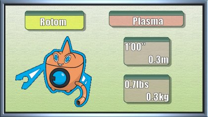

| Pokémon of the Week - April 30th 2017 | ||||
|---|---|---|---|---|
|  | ||||
| Overview | Easily the best Rotom form since 5th gen brought out the unique types. Rotom-W is stupidly good. It used to be third best, but Electric/Water is such a good typing, especially with Levitate. 5 resistances, 1 immunity and 1 weakness is really beast. Rotom-W has great resistances, incredible offensive potential, and has the best unique move out of all of the forms, in my opinion. It is also arguably the best Rotom to use weather; the only other competition being Rotom-F. Politoed gives you infinite rain, which really makes Rotom-W powerful. Scizor does a good job of removing Rotom-W's counters. You basically want to remove Grass Pokémon as soon as possible. Heatran, Skarmory, Latios and Latias, just resist Grass and be able to fight back. Make sure to have good type synergy with Rotom-W as well, so they resist each of their weaknesses. Ideally being able to take on other Pokémon that resist your STABs like Dragons is handy as well. | |||
| Positives |
+It is the premier pivot in the OU metagame that is able to switch into a number of common Pokemon, such as Azumarill, Talonflame, and Landorus. +The standard set of Hydro Pump, Will-o-wisp, and Volt Switch allows it to fit onto most slower or balanced teams. +Landorus-T forms a solid VoltTurn core with Rotom-W that is able to check most physical attackers in OU in tandem with each other. +Rotom-W is a team supporter, so Pokemon that are troubled by threats that Rotom-W checks are able to work off of the tempo gained by Rotom. +105 Special Attack with 86 speed is good for a slow support Pokémon. |
|||
| Negatives |
-It has low HP and a lack of reliable recovery. This makes it difficult for it to survive for an extended period of time -Thunderbolt is stronger than Volt Switch if Rotom-W wants more power, but Rotom-W does not have the space for it. -If you use Thunder Wave, you may be reported and banned for being a terrible human being. |
|||
| Counters | Switching into Mamoswine can be a daunting prospect with its high attack and solid STAB coverage, but it’s not an insurmountable obstacle. In its most commonly used formats, Mamoswine has a few foes that stifle it. Bulky waters are usually a good way to go. Suicune is usually a reliable answer, as even with Life Orb boosted Adamant Earthquake, Suicune is only being 3HKO’ed at best. Suicune’s Scald can 2HKO, which of course has the ever-present threat of a burn as well. Milotic and Vaporeon in the exact same boat as Suicune, although they take Earthquakes a little worse so they have a miniscule chance of being 2HKO’ed. Alomomola tends to only be 4HKO’ed most of the time by LO Earthquake, but its Scald only 3HKOs, and the rare Freeze Dry on mixed sets can be trouble. However, it can shrug off damage dealt to it thanks to Regenerator as well. Some water types are bulky enough to check Mamoswine but not quite enough to counter it outright. These include Feraligatr, Mega Swampert, and Mega Blastoise, all of whom can take any attack from Mamoswine and 1HKO it back, but run the risk of being 2HKO’ed due to being outsped. | |||
| Click here for Further Information on Mamoswine | ||||